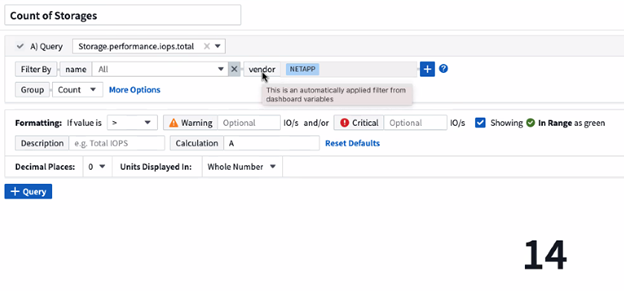
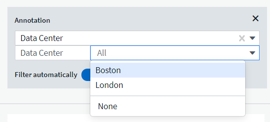

Dokumentationsänderungen beantragen
Dokumentationsänderungen beantragen In GitHub bearbeiten
In GitHub bearbeiten Leitfaden für Beitragende
Leitfaden für BeitragendeDashboard-Funktionen
Beitragende
- Widget-Naming
- Widget-Platzierung und -Größe
- Duplizieren eines Widgets
- Widget-Legenden Werden Angezeigt
- Neue Metriken
- Anfragen und Filter für das Dashboard-Widget
- Gruppierung und Aggregation
- Anzeige Der Oberen/Unteren Ergebnisse
- Gruppierung in TabellenWidget
- Dashboard-Zeitbereich – Auswahl
- Dashboard-Zeit in einzelnen Widgets außer Kraft setzen
- Primäre und sekundäre Achse
- Ausdrücke in Widgets
- Variablen
- Formatieren Von Messbreitewidgets
- Formatieren Eines Single-Value-Widgets
- Auswählen des Geräts für die Datenanzeigen(Anzeige
- TV-Modus und automatische Aktualisierung
- Dashboard-Gruppen
- PIN für Ihre Lieblings-Dashboards
- Dunkles Thema
- Zeilendiagramm-Interpolation
Dashboards und Widgets ermöglichen eine große Flexibilität bei der Anzeige von Daten. Nachfolgend finden Sie einige Konzepte, mit denen Sie Ihre individuellen Dashboards optimal nutzen können.
Widget-Naming
Widgets werden automatisch auf der Grundlage des für die erste Widget-Abfrage ausgewählten Objekts, der Metrik oder des Attributs benannt. Wenn Sie auch eine Gruppierung für das Widget auswählen, werden die Attribute „Gruppieren nach“ in die automatische Benennung (Aggregationsmethode und Metrik) aufgenommen.

Durch Auswahl eines neuen Objekts oder Gruppierungsattributs wird der automatische Name aktualisiert.
Wenn Sie den automatischen Widget-Namen nicht verwenden möchten, können Sie einfach einen neuen Namen eingeben.
Widget-Platzierung und -Größe
Alle Dashboard-Widgets können entsprechend Ihren Anforderungen für jedes Dashboard positioniert und dimensioniert werden.
Duplizieren eines Widgets
Klicken Sie im Dashboard-Bearbeitungsmodus auf das Menü im Widget und wählen Sie Duplizieren. Der Widget-Editor wird gestartet, mit der ursprünglichen Widget-Konfiguration und mit einem "Kopie" Suffix im Widget-Namen ausgefüllt. Sie können ganz einfach alle erforderlichen Änderungen vornehmen und das neue Widget speichern. Das Widget wird am unteren Rand des Dashboards platziert und Sie können sie nach Bedarf positionieren. Denken Sie daran, Ihr Dashboard zu speichern, wenn alle Änderungen abgeschlossen sind.

Widget-Legenden Werden Angezeigt
Die meisten Widgets auf Dashboards können mit oder ohne Legenden angezeigt werden. Legenden in Widgets können auf einem Dashboard über eine der folgenden Methoden ein- oder ausgeschaltet werden:
-
Klicken Sie beim Anzeigen des Dashboards auf die Schaltfläche Optionen im Widget und wählen Sie im Menü die Option Legenden anzeigen aus.
Wenn sich die im Widget angezeigten Daten ändern, wird die Legende für dieses Widget dynamisch aktualisiert.
Wenn Legenden angezeigt werden, wird die Legende als Link zu dieser Asset-Seite angezeigt, wenn die Landing-Page des von der Legende angegebenen Assets navigiert werden kann. Wenn die Legende „all“ anzeigt, wird durch Klicken auf den Link eine Abfrageseite angezeigt, die der ersten Abfrage im Widget entspricht.
Neue Metriken
Cloud Insights bietet verschiedene transform-Optionen für bestimmte Metriken in Widgets (insbesondere die Metriken "Custom" oder Integration Metrics, wie etwa von Kubernetes, ONTAP Advanced Data, Telegraf Plugins, etc.), so dass Sie die Daten auf eine Reihe von Möglichkeiten anzuzeigen. Beim Hinzufügen transformbarer Metriken zu einem Widget werden Sie mit einem Dropdown-Menü mit den folgenden Optionen zur Transformation angezeigt:
- Keine
-
Die Daten werden ohne Manipulation als IS angezeigt.
- Preis
-
Aktueller Wert geteilt durch den Zeitbereich seit der vorherigen Beobachtung.
- Kumulativ
-
Die Akkumulation der Summe der vorherigen Werte und des aktuellen Werts.
- Delta
-
Die Differenz zwischen dem vorhergehenden Beobachtungswert und dem aktuellen Wert.
- Delta-Preis
-
Delta-Wert geteilt durch den Zeitraum seit der vorherigen Beobachtung.
- Kumulierter Betrag
-
Kumulativer Wert geteilt durch den Zeitraum seit der vorherigen Beobachtung.
Beachten Sie, dass bei der Transformation von Metriken nicht die zugrunde liegenden Daten selbst, sondern nur die Art und Weise geändert werden, wie Daten angezeigt werden.
Anfragen und Filter für das Dashboard-Widget
Abfragen
Die Abfrage in einem Dashboard-Widget ist ein leistungsstarkes Tool zur Verwaltung der Anzeige Ihrer Daten. Hier sind einige Dinge zu beachten über Widget-Abfragen.
Einige Widgets können bis zu fünf Abfragen haben. Jede Abfrage erstellt im Widget einen eigenen Satz von Linien oder Diagrammen. Das Einrichten von Rollup, Gruppierung, Ergebnissen von oben/unten usw. auf einer Abfrage hat keine Auswirkungen auf andere Abfragen für das Widget.
Sie können auf das Augensymbol klicken, um eine Abfrage vorübergehend auszublenden. Das Widget wird automatisch aktualisiert, wenn Sie eine Abfrage ausblenden oder anzeigen. Auf diese Weise können Sie die angezeigten Daten auf einzelne Abfragen überprüfen, während Sie Ihr Widget erstellen.
Die folgenden Widget-Typen können mehrere Abfragen haben:
-
Diagramm Bereich
-
Stapelgebietskarte
-
Liniendiagramm
-
Spline-Diagramm
-
Widget mit einem einzelnen Wert
Die übrigen Widget-Typen können nur eine einzige Abfrage haben:
-
Tabelle
-
Balkendiagramm
-
Box-Darstellung
-
Streudiagramm
Filtern in Dashboard-Widget-Abfragen
Hier sind einige Dinge, die Sie tun können, um das Beste aus Ihren Filtern.
Filter Für Exakte Übereinstimmung
Wenn Sie einen Filter in doppelte Anführungszeichen einschließen, behandelt Insight alles zwischen dem ersten und dem letzten Zitat als exakte Übereinstimmung. Alle Sonderzeichen oder Operatoren in den Angeboten werden als Literale behandelt. Wenn Sie beispielsweise nach „*“ filtern, erhalten Sie Ergebnisse, die ein wortwörtlicher Stern sind; das Sternchen wird in diesem Fall nicht als Platzhalter behandelt. Die Operatoren UND, OR und NOT werden auch als Literalzeichenfolgen behandelt, wenn sie in Doppelzitate eingeschlossen sind.
Sie können mithilfe von „Exact Match“-Filtern nach bestimmten Ressourcen suchen, z. B. nach Hostnamen. Wenn Sie nur den Hostnamen 'Marketing' finden möchten, aber 'Marketings-boston' ausschließen möchten, schließen Sie einfach den Namen "Marketing" in doppelte Anführungszeichen ein.
Platzhalter und Ausdrücke
Wenn Sie in Abfragen oder Dashboard-Widgets nach Text- oder Listenwerten filtern, werden Sie beim Eingeben mit der Option angezeigt, basierend auf dem aktuellen Text einen Platzhalter-Filter zu erstellen. Wenn Sie diese Option auswählen, werden alle Ergebnisse angezeigt, die dem Platzhalterausdruck entsprechen. Sie können auch Expressions mit NOT oder ODER erstellen, oder Sie können die Option "Keine" auswählen, um nach Null-Werten im Feld zu filtern.

Filter basierend auf Platzhalter oder Ausdrücken (z. B. NICHT, ODER, „Keine“ usw.) wird im Filterfeld dunkelblau angezeigt. Elemente, die Sie direkt aus der Liste auswählen, werden hellblau angezeigt.

Beachten Sie, dass die Platzhalter- und Ausdrucksfilterung mit Text oder Listen funktioniert, jedoch nicht mit numerischen Werten, Daten oder Booleanen.
Erweiterte Textfilterung mit Textvorschlagsvorschlagsvorschläge
Wenn Sie einen Wert oder Werte für ein Feld auswählen, werden in den anderen Filtern für diese Abfrage die für diesen Filter relevanten Werte angezeigt. Wenn Sie beispielsweise einen Filter für ein bestimmtes Objekt Name festlegen, zeigt das Feld, das nach Model gefiltert werden soll, nur Werte an, die für diesen Objektnamen relevant sind.
Beachten Sie, dass nur Textfilter Kontextvorschläge anzeigen. Datum, Enum (Liste) usw. zeigt keine Vorschläge für den Voraus-Typ an. Das heißt, Sie können einen Filter auf ein Enum (d.h. Liste) Feld setzen und haben andere Textfelder im Kontext gefiltert. Wenn Sie z. B. einen Wert in einem Feld „Enum“ wie „Data Center“ auswählen, werden in anderen Filtern nur die Modelle/Namen in diesem Rechenzentrum angezeigt), nicht jedoch umgekehrt.
Der ausgewählte Zeitbereich stellt auch Kontext für die in Filtern angezeigten Daten bereit.
Auswählen der Filtereinheiten
Wenn Sie einen Wert in ein Filterfeld eingeben, können Sie die Einheiten auswählen, in denen die Werte auf dem Diagramm angezeigt werden sollen. Beispielsweise können Sie nach der Rohkapazität filtern und im deafult gib anzeigen, oder wählen Sie ein anderes Format wie tib aus. Dies ist nützlich, wenn auf dem Dashboard mehrere Diagramme angezeigt werden, die Werte in tib anzeigen, und Sie möchten, dass alle Diagramme konsistente Werte anzeigen.

Zusätzliche Filterveredlungen
Mit den folgenden Optionen können Sie Ihre Filter weiter verfeinern.
-
Mit einem Sternchen können Sie nach allem suchen. Beispiel:
vol*rhel
Zeigt alle Ressourcen an, die mit „vol“ beginnen und mit „RHEL“ enden.
-
Mit dem Fragezeichen können Sie nach einer bestimmten Anzahl von Zeichen suchen. Beispiel:
BOS-PRD??-S12
Zeigt BOS-PRD12-S12, BOS-PRD13-S12 usw. an.
-
Mit dem Operator ODER können Sie mehrere Einheiten angeben. Beispiel:
FAS2240 OR CX600 OR FAS3270
Findet mehrere Storage-Modelle
-
Der NICHT-Operator ermöglicht es Ihnen, Text aus den Suchergebnissen auszuschließen. Beispiel:
NOT EMC*
Findet alles, was nicht mit „EMC“ beginnt. Verwenden Sie können
NOT *
So zeigen Sie Felder an, die keinen Wert enthalten.
Identifizieren von Objekten, die von Abfragen und Filtern zurückgegeben werden
Die von Abfragen und Filtern zurückgegebenen Objekte sehen ähnlich aus wie in der folgenden Abbildung. Objekte, denen Tags zugewiesen sind, sind Annotationen, während die Objekte ohne Tags Performance-Zähler oder Objektattribute sind.

Gruppierung und Aggregation
Gruppierung (Rolling Up)
Die in einem Widget angezeigten Daten werden aus den zugrunde liegenden Datenpunkten, die während der Akquisition gesammelt wurden, gruppiert (manchmal als aufgerollt bezeichnet). Wenn Sie beispielsweise ein Liniendiagramm mit Storage-IOPS im Laufe der Zeit haben, kann es sinnvoll sein, eine separate Zeile für jedes Ihrer Datacenter zu sehen, um einen schnellen Vergleich zu erzielen. Sie haben verschiedene Möglichkeiten, diese Daten zu gruppieren:
-
AVG: Zeigt jede Zeile als den Mittelwert der zugrunde liegenden Daten an.
-
Max: Zeigt jede Zeile als Maximum der zugrunde liegenden Daten an.
-
Min: Zeigt jede Zeile als minimum der zugrunde liegenden Daten an.
-
Sum: Zeigt jede Zeile als die Summe der zugrunde liegenden Daten an.
-
Anzahl: Zeigt eine Anzahl von Objekten an, die Daten innerhalb des angegebenen Zeitrahmens gemeldet haben. Sie können das „gesamte Zeitfenster“ auswählen, das durch den Zeitbereich des Dashboards bestimmt wird (oder den Zeitbereich des Widgets, wenn die Dashboard-Zeit außer Kraft gesetzt wird), oder ein „Custom Time Window“, das Sie auswählen.
Gehen Sie wie folgt vor, um die Gruppierungsmethode festzulegen.
-
Wählen Sie in der Abfrage des Widgets einen Asset-Typ und eine Kennzahl (z. B. Storage) und eine Kennzahl (z. B. „ Performance IOPS Total_“) aus.
-
Wählen Sie für Group eine Roll-up-Methode (z. B. AVG) aus, und wählen Sie die Attribute oder Metriken aus, mit denen die Daten aufgerollt werden sollen (z. B. Data Center).
Das Widget wird automatisch aktualisiert und zeigt Daten für jedes Datacenter an.
Sie können auch auswählen, all der zugrunde liegenden Daten in das Diagramm oder die Tabelle zu gruppieren. In diesem Fall erhalten Sie für jede Abfrage im Widget eine einzelne Zeile, in der der Durchschnitt, das Minimum, das Maximum, die Summe oder die Anzahl der gewählten Metrik oder der Kennzahlen für alle zugrunde liegenden Assets angezeigt wird.
Durch Klicken auf die Legende für jedes Widget, dessen Daten nach „Alle“ gruppiert sind, wird eine Abfrageseite mit den Ergebnissen der ersten Abfrage geöffnet, die im Widget verwendet wird.
Wenn Sie einen Filter für die Abfrage festgelegt haben, werden die Daten basierend auf den gefilterten Daten gruppiert.
Beachten Sie, dass Sie, wenn Sie ein Widget nach einem beliebigen Feld gruppieren möchten (z. B. „Model“), trotzdem nach diesem Feld filtern müssen, um die Daten für dieses Feld auf dem Diagramm oder der Tabelle korrekt anzuzeigen.
Aggregation von Daten
Sie können Ihre Zeitreihendiagramme (Linien-, Bereich usw.) weiter abstimmen, indem Sie Datenpunkte in Minuten-, Stunden- oder Tages-Buckets aggregieren, bevor diese Daten anschließend nach Attribut gerollt werden (falls ausgewählt). Sie können Datenpunkte entsprechend ihrer Werte Mittelwert, Max, Min oder Sum oder dem während des ausgewählten Intervalls erfassten Last-Datenpunkt zusammenfassen. Um eine Aggregationsmethode zu wählen, klicken Sie in der Abfrage des Widgets auf Weitere Optionen.
Ein kleines Intervall kombiniert mit einem langen Zeitbereich kann zu einem "Aggregation-Intervall führte zu zu zu vielen Datenpunkten." Warnung. Falls Sie in einem kleinen Intervall den Zeitrahmen für das Dashboard auf 7 Tage verkürzen möchten, werden Sie diesen vielleicht feststellen. In diesem Fall erhöht Insight vorübergehend das Aggregationsintervall, bis Sie einen kleineren Zeitrahmen auswählen.
Sie können Daten auch im Balkendiagramm-Widget und im Widget mit Einzelwerten aggregieren.
Die meisten Asset-Zähler aggregieren standardmäßig auf Avg. Einige Zähler aggregieren standardmäßig auf Max, Min oder sum. Beispiel: Port-Fehler aggregieren nach sum standardmäßig, wo Storage-IOPS-Aggregat zu Avg.
Anzeige Der Oberen/Unteren Ergebnisse
In einem Diagramm-Widget können Sie entweder die Top- oder bottom-Ergebnisse für gerollte Daten anzeigen und die Anzahl der Ergebnisse aus der angezeigten Dropdown-Liste auswählen. In einem TabellenWidget können Sie nach einer beliebigen Spalte sortieren.
Diagramm-Widget oben/unten
Wenn Sie in einem Diagramm-Widget Daten nach einem bestimmten Attribut einrollen möchten, haben Sie die Möglichkeit, entweder die oberen N- oder unteren N-Ergebnisse anzuzeigen. Beachten Sie, dass Sie die oberen oder unteren Ergebnisse nicht auswählen können, wenn Sie durch all-Attribute Rollen möchten.
Sie können wählen, welche Ergebnisse angezeigt werden sollen, indem Sie im Feld Anzeigen oder unten der Abfrage * einen Wert aus der Liste auswählen.
Tabelle Widget zeigt Einträge an
In einem TabellenWidget können Sie die Anzahl der in den Tabellenergebnissen angezeigten Ergebnisse auswählen. Sie haben nicht die Möglichkeit, obere oder untere Ergebnisse zu wählen, da Sie in der Tabelle nach Bedarf aufsteigend oder absteigend sortieren können.
Sie können die Anzahl der Ergebnisse auswählen, die in der Tabelle auf dem Dashboard angezeigt werden sollen, indem Sie einen Wert aus dem Feld Einträge anzeigen der Abfrage auswählen.
Gruppierung in TabellenWidget
Die Daten in einem TabellenWidget können nach allen verfügbaren Attributen gruppiert werden. So können Sie einen Überblick über Ihre Daten anzeigen und sie für mehr Details anzeigen. Metriken in der Tabelle werden für eine einfache Anzeige in jeder zusammenklappbaren Zeile aufgerollt.
Mit den Tabelle-Widgets können Sie Ihre Daten anhand der von Ihnen festgelegten Attribute gruppieren. Vielleicht soll in Ihrer Tabelle der gesamte Storage IOPS angezeigt werden, der nach Datacentern gruppiert ist, in denen diese Storages gespeichert sind. Oder Sie möchten eine Tabelle von virtuellen Maschinen anzeigen, die nach dem Hypervisor gruppiert sind, der sie hostet. In der Liste können Sie jede Gruppe erweitern, um die Assets in dieser Gruppe anzuzeigen.
Die Gruppierung ist nur im Widget-Typ Tabelle verfügbar.
Beispiel für Gruppierung (mit Rollup-Erklärung)
Mit den Tabelle-Widgets können Sie Daten gruppieren, um die Anzeige zu erleichtern.
In diesem Beispiel werden wir ein TabellenWidget erstellen, das alle VMs nach Datacenter gruppiert zeigt.
-
Erstellen oder öffnen Sie ein Dashboard, und fügen Sie ein Widget mit * Table* hinzu.
-
Wählen Sie Virtual Machine als Asset-Typ für dieses Widget aus.
-
Klicken Sie auf die Spaltenauswahl und wählen Sie Hypervisor Name und IOPS - Total.
Diese Spalten werden jetzt in der Tabelle angezeigt.
-
Ignorieren Sie alle VMs ohne IOPS und schließen Sie nur VMs ein, die insgesamt IOPS mehr als 1 haben. Klicken Sie auf die Schaltfläche Filter by [+] und wählen Sie IOPS - Total. Klicken Sie auf any, und geben Sie im Feld von 1 ein. Lassen Sie das Feld * to* leer. Klicken Sie auf Enter ot, und klicken Sie auf das Filterfeld, um den Filter anzuwenden.
In der Tabelle werden jetzt alle VMs mit IOPS-Gesamtwerten größer oder gleich 1 angezeigt. Beachten Sie, dass es keine Gruppierung in der Tabelle gibt. Alle VMs werden angezeigt.
-
Klicken Sie auf die Schaltfläche Group by [+].
Sie können nach beliebigen Attributen oder Kommentaren gruppieren. Wählen Sie „ Alle_“, um alle VMs in einer einzelnen Gruppe anzuzeigen.
In jedem Spaltenkopf für eine Leistungskennzahl wird ein Menü „drei Punkte“ mit einer Option Roll Up angezeigt. Die Standard-Rollup-Methode lautet Avg. Das bedeutet, dass die für die Gruppe angezeigte Zahl der Durchschnitt aller gesamten IOPS ist, die für jede VM innerhalb der Gruppe gemeldet wurden. Sie können diese Spalte mit Mittelwert, Summe, Min oder Max nach oben Rollen. Alle angezeigten Spalten mit Performance-Metriken können individuell aufgerollt werden.

-
Klicken Sie auf All und wählen Sie Hypervisor Name aus.
Die VM-Liste ist jetzt nach Hypervisor gruppiert. Sie können jeden Hypervisor erweitern, um die von ihm gehosteten VMs anzuzeigen.
-
Klicken Sie auf Speichern, um die Tabelle im Dashboard zu speichern. Sie können die Größe des Widgets ändern oder verschieben.
-
Klicken Sie auf Speichern, um das Dashboard zu speichern.
Aufkommen von Performance-Daten
Wenn Sie eine Spalte für Leistungsdaten (z. B. IOPS - Total) in ein TabellenWidget einfügen, können Sie bei Auswahl der Gruppierung der Daten eine Aufrollmethode für diese Spalte auswählen. Die Standard-Roll-up-Methode ist die Anzeige des Durchschnitts (avg) der zugrunde liegenden Daten in der Gruppenzeile. Sie können auch die Summe, das Minimum oder das Maximum der Daten anzeigen.
Dashboard-Zeitbereich – Auswahl
Sie können den Zeitbereich für Ihre Dashboard-Daten auswählen. Nur für den ausgewählten Zeitbereich relevante Daten werden in Widgets auf dem Dashboard angezeigt. Sie können aus folgenden Zeitbereichen auswählen:
-
Letzte 15 Minuten
-
Letzte 30 Minuten
-
Letzte 60 Minuten
-
Die Letzten 2 Stunden
-
Die letzten 3 Stunden (dies ist die Standardeinstellung)
-
Letzte 6 Stunden
-
Letzte 12 Stunden
-
Letzte 24 Stunden
-
Letzte 2 Tage
-
Letzte 3 Tage
-
Letzte 7 Tage
-
Letzte 30 Tage
-
Benutzerdefinierter Zeitbereich
Im benutzerdefinierten Zeitbereich können Sie bis zu 31 aufeinander folgende Tage auswählen. Sie können für diesen Bereich auch die Startzeit und die Endzeit des Tages festlegen. Die standardmäßige Startzeit ist 12:00 UHR am ersten ausgewählten Tag und die standardmäßige Endzeit ist am letzten ausgewählten Tag 11:59 Uhr. Durch Klicken auf Anwenden wird der benutzerdefinierte Zeitbereich auf das Dashboard angewendet.
Dashboard-Zeit in einzelnen Widgets außer Kraft setzen
Sie können die Einstellung für den Hauptzeitbereich des Dashboards in den einzelnen Widgets überschreiben. Diese Widgets zeigen Daten basierend auf dem eingestellten Zeitrahmen an, nicht auf dem Zeitrahmen des Dashboards.
Um die Dashboard-Zeit zu überschreiben und ein Widget zu zwingen, seinen eigenen Zeitrahmen zu verwenden, setzen Sie im Bearbeitungsmodus des Widgets die Dashboard-Zeit überschreiben auf ein (markieren Sie das Kästchen) und wählen Sie einen Zeitbereich für das Widget aus. * Speichern* das Widget auf dem Dashboard.
Das Widget zeigt seine Daten entsprechend dem dafür eingestellten Zeitrahmen an, unabhängig vom ausgewählten Zeitrahmen auf dem Dashboard selbst.
Der Zeitrahmen, den Sie für ein Widget festlegen, hat keine Auswirkungen auf andere Widgets auf dem Dashboard.
Primäre und sekundäre Achse
Verschiedene Metriken verwenden unterschiedliche Maßeinheiten für die Daten, die sie in einem Diagramm erfassen. Wenn wir beispielsweise IOPS betrachten, entspricht die Maßeinheit der Anzahl der I/O-Operationen pro Sekunde (I/O/s), während die Latenz lediglich ein Maß an Zeit ist (Millisekunden, Mikrosekunden, Sekunden usw.). Wenn Sie beide Metriken auf einem einzigen Liniendiagramm mit einem einzelnen Satz A-Werte für die Y-Achse angeben, werden die Latenzzahlen (normalerweise wenige Millisekunden) im selben Maßstab mit den IOPS (normalerweise sind Tausende) dargestellt und die Latenzzeile geht bei diesem Maßstab verloren.
Es ist jedoch möglich, beide Datensätze auf einem einzigen aussagekräftigen Diagramm zu grafisch zu gestalten, indem eine Maßeinheit auf der primären (linken) Y-Achse und die andere Maßeinheit auf der sekundären (rechten) Y-Achse eingestellt wird. Jede Metrik wird im eigenen Maßstab dokumentiert.
Dieses Beispiel veranschaulicht das Konzept der primären und sekundären Achsen in einem Diagramm-Widget.
-
Erstellen oder Öffnen eines Dashboards. Fügen Sie dem Dashboard ein Liniendiagramm, ein Spline-Diagramm, ein Flächendiagramm oder ein Stacked Area Chart hinzu.
-
Wählen Sie einen Asset-Typ (z. B. Storage) aus, und wählen Sie für Ihre erste Metrik „IOPS - Total“ aus. Stellen Sie Ihre gewünschten Filter ein, und wählen Sie ggf. eine Roll-up-Methode aus.
Die IOPS-Linie wird auf dem Diagramm angezeigt, wobei ihre Skalierung auf der linken Seite dargestellt ist.
-
Klicken Sie auf [+Query], um eine zweite Zeile zum Diagramm hinzuzufügen. Wählen Sie für diese Zeile die Option Latenz - Total für die Kennzahl.
Beachten Sie, dass die Linie flach am unteren Rand des Diagramms angezeigt wird. Der Grund dafür ist, dass sie auf derselben Skala wie die IOPS-Zeile gezeichnet wird.
-
Wählen Sie in der Latenzabfrage Y-Achse: Sekundär aus.
Die Latenzlinie wird jetzt auf eigene Skala gezeichnet, die rechts im Diagramm angezeigt wird.

Ausdrücke in Widgets
In einem Dashboard können Sie jedes Zeitreihungs-Widget (Linie, Spline, Bereich, gestapelter Bereich), einen Wert, Oder Widget messen ermöglicht es Ihnen, Ausdrücke aus ausgewählten Metriken zu erstellen und das Ergebnis dieser Ausdrücke in einem einzigen Diagramm anzuzeigen. Die folgenden Beispiele verwenden Ausdrücke, um bestimmte Probleme zu lösen. Im ersten Beispiel möchten wir den IOPS-Wert für alle Storage Assets in unserer Umgebung als Prozentsatz von IOPS insgesamt darstellen. Das zweite Beispiel gibt Einblick in die in Ihrer Umgebung auftretenden IOPS des „Systems“ oder „Overhead“ - jene IOPS, die nicht direkt vom Lesen oder Schreiben von Daten stammen.
Sie können Variablen in Ausdrücken verwenden (z. B. _ € Var1 * 100_)
Ausdrücke Beispiel: Lese-IOPS in Prozent
In diesem Beispiel möchten wir den IOPS-Wert für Lesevorgänge als Prozentsatz des gesamten IOPS anzeigen. Sie können sich dies als folgende Formel vorstellen:
Read Percentage = (Read IOPS / Total IOPS) x 100 Diese Daten können in einem Liniendiagramm auf Ihrem Dashboard angezeigt werden. Um dies zu tun, führen Sie folgende Schritte aus:
-
Erstellen Sie ein neues Dashboard oder öffnen Sie ein vorhandenes Dashboard im Bearbeitungsmodus.
-
Fügen Sie ein Widget zum Dashboard hinzu. Wählen Sie Flächendiagramm.
Das Widget wird im Bearbeitungsmodus geöffnet. Standardmäßig wird eine Abfrage mit IOPS - Total für Storage Assets angezeigt. Wählen Sie bei Bedarf einen anderen Asset-Typ aus.
-
Klicken Sie rechts auf den Link in Ausdruck konvertieren.
Die aktuelle Abfrage wird in den Ausdrucksmodus konvertiert. Beachten Sie, dass Sie den Asset-Typ im Expression-Modus nicht ändern können. Während Sie sich im Expression-Modus befinden, ändert sich der Link zu revert to Query. Klicken Sie auf diese Option, wenn Sie jederzeit wieder in den Abfragemodus wechseln möchten. Beachten Sie, dass durch Umschalten zwischen den Modi die Felder auf ihre Standardeinstellungen zurückgesetzt werden.
Bleiben Sie jetzt im Expression-Modus.
-
Die Metrik IOPS - Total befindet sich jetzt im alphabetischen Variablenfeld "A". Klicken Sie in der Variablen "b" auf Auswählen und wählen Sie IOPS - Lesen.
Sie können insgesamt fünf alphabetische Variablen für Ihren Ausdruck hinzufügen, indem Sie auf die +-Schaltfläche nach den Variablenfeldern klicken. Für unser Beispiel in Bezug auf den Leseanteil benötigen wir lediglich Total IOPS ("A") und Lese-IOPS ("b").
-
Im Feld Ausdruck verwenden Sie die Buchstaben, die jeder Variablen entsprechen, um Ihren Ausdruck zu erstellen. Wir wissen, dass Read prozentual = (Lese-IOPS / Gesamt-IOPS) x 100, also würden wir diesen Ausdruck schreiben als:
(b / a) * 100 . Das Feld *Beschriftung* kennzeichnet den Ausdruck. Ändern Sie die Bezeichnung in „Prozentsatz lesen“ oder etwas, das für Sie gleichermaßen sinnvoll ist. . Ändern Sie das Feld *Einheiten* in „%“ oder „Prozent“.
Das Diagramm zeigt den prozentualen IOPS-Leseanteil im Zeitverlauf für die ausgewählten Speichergeräte an. Auf Wunsch können Sie einen Filter einstellen oder eine andere Rollup-Methode auswählen. Beachten Sie, dass wenn Sie als Rollup-Methode Summe auswählen, alle Prozentwerte zusammen hinzugefügt werden, die möglicherweise über 100 % liegen können.
-
Klicken Sie auf Speichern, um das Diagramm auf Ihrem Dashboard zu speichern.
Sie können auch Ausdrücke in den Widgets Liniendiagramm, Spline-Diagramm oder gestapelte Flächendiagramme verwenden.
Ausdrücke Beispiel: "System" I/O
Beispiel 2: Zu den Kennzahlen, die von Datenquellen erfasst werden, zählen Lese-, Schreib- und IOPS-Gesamtwerte. Die Gesamtzahl der von einer Datenquelle gemeldeten IOPS umfasst jedoch manchmal „System“ IOPS, bei denen es sich um diese I/O-Vorgänge handelt, die nicht direkt zum Lesen oder Schreiben der Daten gehören. Dieser System-I/O kann auch als „Overhead“-I/O bezeichnet werden, der für einen ordnungsgemäßen Systembetrieb, aber nicht direkt mit Datenoperationen benötigt wird.
Zur Anzeige dieser System-I/OS können die Lese- und Schreib-IOPS von den insgesamt gemeldeten IOPS aus der Übernahme entfernt werden. Die Formel könnte wie folgt aussehen:
System IOPS = Total IOPS - (Read IOPS + Write IOPS) Diese Daten können dann in einem Liniendiagramm auf Ihrem Dashboard angezeigt werden. Um dies zu tun, führen Sie folgende Schritte aus:
-
Erstellen Sie ein neues Dashboard oder öffnen Sie ein vorhandenes Dashboard im Bearbeitungsmodus.
-
Fügen Sie ein Widget zum Dashboard hinzu. Wählen Sie Liniendiagramm.
Das Widget wird im Bearbeitungsmodus geöffnet. Standardmäßig wird eine Abfrage mit IOPS - Total für Storage Assets angezeigt. Wählen Sie bei Bedarf einen anderen Asset-Typ aus.
-
Wählen Sie im Feld Roll Up die Option sum by All.
Das Diagramm zeigt eine Zeile mit der Summe der IOPS-Gesamtwerte an.
-
Klicken Sie auf das Symbol Diese Abfrage duplizieren
 So erstellen Sie eine Kopie der Abfrage.
So erstellen Sie eine Kopie der Abfrage.Ein Duplikat der Abfrage wird unterhalb des Originals hinzugefügt.
-
Klicken Sie in der zweiten Abfrage auf die Schaltfläche in Ausdruck konvertieren.
Die aktuelle Abfrage wird in den Ausdrucksmodus konvertiert. Klicken Sie auf Zurücksetzen auf Abfrage, wenn Sie jederzeit wieder in den Abfragemodus wechseln möchten. Beachten Sie, dass durch Umschalten zwischen den Modi die Felder auf ihre Standardeinstellungen zurückgesetzt werden.
Bleiben Sie jetzt im Expression-Modus.
-
Die Metrik IOPS - Total befindet sich jetzt im alphabetischen Variablenfeld "A". Klicken Sie auf IOPS - Total, und ändern Sie ihn in IOPS - Read.
-
Klicken Sie in der Variablen "b" auf Select und wählen Sie IOPS - Write.
-
Im Feld Ausdruck verwenden Sie die Buchstaben, die jeder Variablen entsprechen, um Ihren Ausdruck zu erstellen. Wir würden unseren Ausdruck einfach schreiben als:
a + b
Wählen Sie im Bereich Anzeige für diesen Ausdruck die Option Flächendiagramm aus.
-
Das Feld Beschriftung kennzeichnet den Ausdruck. Ändern Sie das Label in „System IOPS“ oder etwas, das für Sie gleichbedeutend ist.
Im Diagramm wird die IOPS insgesamt als Liniendiagramm angezeigt. In einem Flächendiagramm wird die Kombination aus Lese- und Schreib-IOPS unterhalb dieser Werte angezeigt. Die Lücke zwischen den beiden gibt die IOPS an, die nicht direkt mit Lese- oder Schreibvorgängen verbunden sind. Das sind Ihre „System“ IOPS.
-
Klicken Sie auf Speichern, um das Diagramm auf Ihrem Dashboard zu speichern.
Um eine Variable in einem Ausdruck zu verwenden, geben Sie einfach den Variablennamen ein, z. B. _ € var1 * 100_. Nur numerische Variablen können in Ausdrücken verwendet werden.
Variablen
Variablen ermöglichen es Ihnen, die in einigen oder allen Widgets auf einem Dashboard angezeigten Daten gleichzeitig zu ändern. Durch Festlegen eines oder mehrerer Widgets für die Verwendung einer allgemeinen Variable führen Änderungen an einem Ort dazu, dass die in jedem Widget angezeigten Daten automatisch aktualisiert werden.
Dashboard-Variablen enthalten verschiedene Typen, können in verschiedenen Feldern verwendet werden und müssen Regeln für die Benennung befolgen. Diese Konzepte werden hier erläutert.
Variabentypen
Eine Variable kann einen der folgenden Typen sein:
-
Attribut: Verwenden Sie die Attribute oder Metriken eines Objekts, um sie zu filtern
-
Anmerkung: Verwenden Sie eine vordefinierte "Anmerkung" Widget-Daten filtern.
-
Text: Eine alphanumerische Zeichenfolge.
-
Numerisch: Ein Zahlenwert. Sie können je nach Widget-Feld entweder selbst oder als „von“- oder „nach“-Wert verwenden.
-
Boolean: Verwenden Sie für Felder mit Werten True/False, Yes/No, etc. Für die boolesche Variable stehen die Optionen Ja, Nein, Keine, Any.
-
Datum: Ein Datumswert. Verwenden Sie je nach Konfiguration Ihres Widgets als „von“ oder „nach“-Wert.

Attributvariablen
Durch die Auswahl einer Attributtypvariable können Sie nach Widget-Daten filtern, die den angegebenen Attributwert oder die angegebenen Werte enthalten. Das folgende Beispiel zeigt ein Line-Widget mit freien Speichertrends für Agent-Knoten. Wir haben eine Variable für Agent-Node-IPs erstellt, die derzeit auf die Anzeige aller IPs eingestellt ist:

Wenn Sie jedoch vorübergehend nur Nodes in einzelnen Subnetzen in Ihrer Umgebung sehen möchten, können Sie die Variable in eine bestimmte Agent-Node-IP oder IPs einstellen oder ändern. Hier sehen wir nur die Knoten auf dem „123“ Subnetz:

Sie können auch eine Variable festlegen, um unabhängig vom Objekttyp auf all Objekte mit einem bestimmten Attribut zu filtern, zum Beispiel Objekte mit einem Attribut "Anbieter", indem Sie *.Vendor im Feld Variable angeben. Sie müssen nicht das "*." eingeben; Cloud Insights wird dies liefern, wenn Sie die Platzhalteroption auswählen.

Wenn Sie die Auswahlliste für den variablen Wert Dropdown, werden die Ergebnisse gefiltert, damit nur die verfügbaren Anbieter auf Basis der Objekte im Dashboard angezeigt werden.

Wenn Sie ein Widget in Ihrem Dashboard bearbeiten, in dem der Attributfilter relevant ist (d. h. die Objekte des Widgets enthalten ein beliebiges *.Vendor-Attribut), zeigt es Ihnen an, dass der Attributfilter automatisch angewendet wird.

Das Anwenden von Variablen ist genauso einfach wie das Ändern der Attributdaten Ihrer Wahl.
Anmerkungsvariablen
Durch Auswahl einer Anmerkungsvariable können Sie nach Objekten filtern, die mit dieser Anmerkung verknüpft sind, z. B. Objekten, die zum selben Rechenzentrum gehören.

Text, Nummer, Datum oder Boolesche Variable
Sie können generische Variablen erstellen, die nicht mit einem bestimmten Attribut verknüpft sind, indem Sie einen Variablentyp von Text, Number, Boolean oder Date auswählen. Sobald die Variable erstellt wurde, können Sie sie in einem Widget-Filterfeld auswählen. Beim Festlegen eines Filters in einem Widget werden zusätzlich zu bestimmten Werten, die Sie für den Filter auswählen können, alle Variablen angezeigt, die für das Dashboard erstellt wurden. Diese werden im Dropdown-Menü unter dem Abschnitt „Variablen“ gruppiert und haben Namen, die mit „€“ beginnen. Wenn Sie eine Variable in diesem Filter auswählen, können Sie nach Werten suchen, die Sie im Feld Variable im Dashboard selbst eingeben. Alle Widgets, die diese Variable in einem Filter verwenden, werden dynamisch aktualisiert.

Bereich Für Variablenfilter
Wenn Sie Ihrem Dashboard eine Annotation- oder Attributvariable hinzufügen, kann die Variable auf all Widgets auf dem Dashboard angewendet werden. Das bedeutet, dass alle Widgets auf Ihrem Dashboard die Ergebnisse anzeigen, die entsprechend dem Wert gefiltert werden, den Sie in der Variable festgelegt haben.

Beachten Sie, dass nur Attribut- und Anmerkungsvariablen so automatisch gefiltert werden können. Variablen ohne Anmerkung oder -Attribut können nicht automatisch gefiltert werden. Die einzelnen Widgets müssen so konfiguriert werden, dass sie Variablen dieser Typen verwenden.
Um die automatische Filterung so zu deaktivieren, dass die Variable nur für die Widgets gilt, in denen Sie sie speziell eingestellt haben, klicken Sie auf den Schieberegler „automatisch filtern“, um sie zu deaktivieren.
Um eine Variable in einem einzelnen Widget zu setzen, öffnen Sie das Widget im Bearbeitungsmodus und wählen Sie die spezifische Anmerkung oder das Attribut im Feld Filter by aus. Bei einer Anmerkungsvariable können Sie einen oder mehrere bestimmte Werte auswählen oder den Variablennamen (angegeben durch die führende „€“) auswählen, um die Eingabe der Variable auf der Dashboard-Ebene zu ermöglichen. Das gleiche gilt für Attributvariablen. Nur die Widgets, für die Sie die Variable festlegen, werden die gefilterten Ergebnisse angezeigt.
Um eine Variable in einem Ausdruck zu verwenden, geben Sie einfach den Variablennamen als Teil des Ausdrucks ein, z. B. _ € var1 * 100_. Nur numerische Variablen können in Ausdrücken verwendet werden. In Ausdrücken können keine numerischen Anmerkungs- oder Attributvariablen verwendet werden.
Variablenbenennung
Variablennamen:
-
Darf nur die Buchstaben a-z, die Ziffern 0-9, Punkt (.), Unterstrich (_) und Leerzeichen ( ) enthalten.
-
Darf nicht länger als 20 Zeichen sein.
-
Achten Sie auf Groß- und Kleinschreibung: Cityname in Höhe von USD und Cityname sind verschiedene Variablen.
-
Darf nicht mit einem vorhandenen Variablennamen identisch sein.
-
Darf nicht leer sein.
Formatieren Von Messbreitewidgets
Mit den Widgets für Volumenanzeige und Glühlampen können Sie Schwellenwerte für die Stufen Warnung und/oder kritisch festlegen, um die angegebenen Daten klar zu darstellen.

So legen Sie die Formatierung für diese Widgets fest:
-
Wählen Sie aus, ob Sie Werte größer als (>) oder kleiner als (<) Ihre Schwellenwerte markieren möchten. In diesem Beispiel werden Werte hervorgehoben, die größer sind als (>) die Schwellwerte.
-
Wählen Sie einen Wert für den Schwellenwert „Warnung“ aus. Wenn im Widget Werte angezeigt werden, die größer als diese Stufe sind, wird die Anzeige orange angezeigt.
-
Wählen Sie einen Wert für den „kritischen“ Schwellenwert aus. Wenn die Werte größer sind als diese Stufe, wird das Messgerät rot angezeigt.
Sie können optional einen Mindest- und Maximalwert für die Messuhr auswählen. Die Werte unter dem Mindestwert werden nicht angezeigt. Werte über dem Maximum zeigen einen vollen Wert an. Wenn Sie keine Mindest- oder Höchstwerte auswählen, wählt das Widget basierend auf dem Wert des Widgets die optimale Min- und Höchstwert aus.


Formatieren Eines Single-Value-Widgets
Im Widget „Single-Value“ können Sie neben der Einstellung „Warning (orange)“ und „Critical (Red) schwellern die Werte im Bereich (die unterhalb der Warnstufe) mit grünem oder weißem Hintergrund anzeigen lassen.

Wenn Sie auf den Link in einem Widget mit einem Wert oder einem Gauge-Widget klicken, wird eine Abfrageseite angezeigt, die der ersten Abfrage im Widget entspricht.
Auswählen des Geräts für die Datenanzeigen(Anzeige
Die meisten Widgets auf einem Dashboard ermöglichen die Angabe der Einheiten, in denen Werte angezeigt werden sollen, z. B. Megabyte, Tausende, Prozentsatz, Millisekunden (ms), Etc. In vielen Fällen kennt Cloud Insights das beste Format für die zu erschaffenden Daten. Wenn das beste Format nicht bekannt ist, können Sie das gewünschte Format festlegen.
Im nachstehenden Liniendiagramm sind die für das Widget ausgewählten Daten in Bytes (die Basiseinheit IEC-Daten: Siehe Tabelle unten) angegeben, sodass die Basiseinheit automatisch als 'Byte (B)' ausgewählt wird. Die Datenwerte sind jedoch groß genug, um als Gibibyte (gib) präsentiert werden zu können, sodass Cloud Insights standardmäßig die Werte als gib automatisch formatiert. Auf der Y-Achse im Diagramm wird auf der Anzeigeeinheit „gib“ angezeigt, und alle Werte werden gemäß dieser Einheit angezeigt.

Wenn Sie das Diagramm in einer anderen Einheit anzeigen möchten, können Sie ein anderes Format auswählen, in dem die Werte angezeigt werden sollen. Da die Basiseinheit in diesem Beispiel Byte ist, können Sie zwischen den unterstützten „Byte-basierten“ Formaten wählen: Bit (b), Byte (B), Kibibyte (KiB), Mebibyte (MiB), Gibibyte (gib). Die Y-Achse und die Werte ändern sich je nach dem gewählten Format.

In Fällen, in denen die Basiseinheit nicht bekannt ist, können Sie eine Einheit aus dem zuweisen "Verfügbare Einheiten"Oder geben Sie Ihre eigene Eingabe ein. Sobald Sie eine Basiseinheit zugewiesen haben, können Sie auswählen, um die Daten in einem der entsprechenden unterstützten Formate anzuzeigen.

Um die Einstellungen zu löschen und wieder zu starten, klicken Sie auf Standardeinstellungen zurücksetzen.
Ein Wort zu Auto-Format
Die meisten Metriken werden von Datensammlern in der kleinsten Einheit berichtet, beispielsweise als ganze Zahl wie 1,234,567,890 Bytes. Standardmäßig formatiert Cloud Insights den Wert für die lesbare Anzeige automatisch. Beispielsweise würde ein Datenwert von 1,234,567,890 Byte automatisch auf 1.23 Gibibyte formatiert. Sie können wählen, ob Sie es in einem anderen Format anzeigen möchten, z. B. Mebibyte. Der Wert wird entsprechend angezeigt.

|
Cloud Insights nutzt die Namensstandards für die Benennung amerikanischer Zahlen. Die amerikanische "Milliarde" entspricht "tausend Millionen". |
Widgets mit mehreren Abfragen
Wenn Sie über ein Widget mit Zeitreihen verfügen (z. B. Linie, Spline, Bereich, gestapelter Bereich), das zwei Abfragen enthält, bei denen beide die primäre Y-Achse dargestellt werden, wird die Basiseinheit nicht oben auf der Y-Achse angezeigt. Wenn Ihr Widget jedoch über eine Abfrage auf der primären Y-Achse und eine Abfrage auf der sekundären Y-Achse verfügt, werden die Basiseinheiten für jede einzelne Achse angezeigt.

Wenn Ihr Widget drei oder mehr Abfragen hat, werden Basiseinheiten auf der Y-Achse nicht angezeigt.
Verfügbare Einheiten
Die folgende Tabelle zeigt alle verfügbaren Einheiten nach Kategorie.
Kategorie |
Einheiten |
Währung |
Cent-Dollar |
Daten (IEC) |
Bit-Byte-Kibibyte-Gibibyte-Tebibyte-Pebibyte-Exbibyte |
Datenrate (IEC) |
Bit/Sek.-Byte/Sek.-Kibibyte/Sek.-Mebibyte/Sek.-Gibibyte/Sek.-Tebibyte/Sek.-Pebibyte/Sek. |
Daten (Metrisch) |
kilobyte Megabyte Gigabyte Terabyte Petabyte Exabyte |
Datenrate (metrisch) |
kilobyte/s, Megabyte/s, Gigabyte/Sek. Terabyte/Sek., Exabyte/Sek. |
IEC |
kibi mebi gibi tebi pebi exbi |
Dezimal |
Ganze tausend Millionen Bilion Billionen |
Prozentsatz |
Prozentsatz |
Zeit |
Zweite Minute Stunde im Nanosekundenbereich im Mikrosekundenbereich |
Temperatur |
celsius fahrenheit |
Frequenz |
hertz Kilohertz Megahertz Gigahertz |
CPU |
Nanocores Mikrokerne Millicores Kerne kilocores megacores gigacores teracores petacores anspruchsvolle |
Durchsatz |
I/O OPs/s OPs/s gemäß s/s Lese-/Sek. Schreibzugriffe/s OPs/s OPs/Min. Lese-/Min. Schreib-/Min |
TV-Modus und automatische Aktualisierung
Die Daten in Widgets auf Dashboards und Asset Landing Pages werden automatisch aktualisiert, und zwar gemäß einem Aktualisierungsintervall, das durch den ausgewählten Zeitbereich des Dashboards bestimmt wird (oder wenn der Widget-Zeitbereich die Dashboard-Zeit außer Kraft setzt). Das Aktualisierungsintervall hängt davon ab, ob es sich bei dem Widget um Zeitreihen (Linie, Spline, Bereich, gestapelte Flächendiagramme) oder nicht-Zeitreihen (alle anderen Diagramme) handelt.
Dashboard-Zeitbereich |
Zeit-Serie Aktualisierungsintervall |
Nicht-Time-Series-Aktualisierungsintervall |
Letzte 15 Minuten |
10 Sekunden |
1 Minute |
Letzte 30 Minuten |
15 Sekunden |
1 Minute |
Letzte 60 Minuten |
15 Sekunden |
1 Minute |
Die Letzten 2 Stunden |
30 Sekunden |
5 Minuten |
Letzte 3 Stunden |
30 Sekunden |
5 Minuten |
Letzte 6 Stunden |
1 Minute |
5 Minuten |
Letzte 12 Stunden |
5 Minuten |
10 Minuten |
Letzte 24 Stunden |
5 Minuten |
10 Minuten |
Letzte 2 Tage |
10 Minuten |
10 Minuten |
Letzte 3 Tage |
15 Minuten |
15 Minuten |
Letzte 7 Tage |
1 Stunde |
1 Stunde |
Letzte 30 Tage |
2 Stunden |
2 Stunden |
Jedes Widget zeigt sein Intervall für die automatische Aktualisierung in der oberen rechten Ecke des Widgets an.
Die automatische Aktualisierung ist für den benutzerdefinierten Zeitbereich des Dashboards nicht verfügbar.
In Kombination mit TV-Modus ermöglicht die automatische Aktualisierung die Anzeige von Daten auf einem Dashboard oder einer Asset-Seite nahezu in Echtzeit. Der TV-Modus bietet ein übersichtliches Display. Das Navigationsmenü ist ausgeblendet und bietet so mehr Platz für Ihre Datenanzeige, wie die Schaltfläche Bearbeiten. Der TV-Modus ignoriert typische Cloud Insights-Timeouts und lässt das Display so lange in Betrieb, bis es manuell oder automatisch durch Autorisierungsprotokolle abgemeldet wird.
|
|
Da NetApp Cloud Central 7 Tage lang seine eigene Anmeldezeit für Benutzer hat, muss sich Cloud Insights auch bei diesem Ereignis abmelden. Sie können sich einfach erneut anmelden und Ihr Dashboard wird weiterhin angezeigt. |
-
Um den TV-Modus zu aktivieren, klicken Sie auf
 Schaltfläche.
Schaltfläche. -
Um den TV-Modus zu deaktivieren, klicken Sie oben links auf dem Bildschirm auf die Schaltfläche Beenden.

Sie können die automatische Aktualisierung vorübergehend unterbrechen, indem Sie oben rechts auf die Schaltfläche „Pause“ klicken. Während der Pause wird im Feld Zeitbereich des Dashboards der aktive Zeitraum der angehaltenen Daten angezeigt. Ihre Daten werden weiterhin erfasst und aktualisiert, während die automatische Aktualisierung angehalten wird. Klicken Sie auf die Schaltfläche Fortsetzen, um mit der automatischen Aktualisierung von Daten fortzufahren.

Dashboard-Gruppen
Durch Gruppierung können Sie zugehörige Dashboards anzeigen und verwalten. Sie können beispielsweise eine Dashboard-Gruppe einrichten, die dem Storage in Ihrer Umgebung zugewiesen ist. Dashboard-Gruppen werden auf der Seite Dashboards > Alle Dashboards anzeigen verwaltet.

Standardmäßig werden zwei Gruppen angezeigt:
-
Alle Dashboards listet alle Dashboards auf, die erstellt wurden, unabhängig vom Eigentümer.
-
Meine Dashboards listet nur die Dashboards auf, die vom aktuellen Benutzer erstellt wurden.
Die Anzahl der Dashboards in jeder Gruppe wird neben dem Gruppennamen angezeigt.
Um eine neue Gruppe zu erstellen, klicken Sie auf die Schaltfläche "+" Neue Dashboard-Gruppe erstellen. Geben Sie einen Namen für die Gruppe ein und klicken Sie auf Gruppe erstellen. Eine leere Gruppe mit diesem Namen wird erstellt.
Um Dashboards zur Gruppe hinzuzufügen, klicken Sie auf die Gruppe Alle Dashboards, um alle Dashboards in Ihrer Umgebung anzuzeigen, klicken Sie auf eigene Dashboards, wenn Sie nur die Dashboards sehen möchten, die Sie besitzen, und führen Sie eine der folgenden Aktionen durch:
-
Um ein einzelnes Dashboard hinzuzufügen, klicken Sie auf das Menü rechts neben dem Dashboard und wählen Sie zu Gruppe hinzufügen.
-
Um einer Gruppe mehrere Dashboards hinzuzufügen, wählen Sie diese aus, indem Sie auf das Kontrollkästchen neben jedem Dashboard klicken. Klicken Sie dann auf die Schaltfläche Massenaktionen und wählen Sie zu Gruppe hinzufügen.
Entfernen Sie Dashboards auf dieselbe Weise aus der aktuellen Gruppe, indem Sie aus Gruppe entfernen auswählen. Sie können Dashboards nicht aus der Gruppe Alle Dashboards oder Meine Dashboards entfernen.
|
|
Durch Entfernen eines Dashboards aus einer Gruppe wird das Dashboard nicht aus Cloud Insights gelöscht. Um ein Dashboard vollständig zu entfernen, wählen Sie das Dashboard aus, und klicken Sie auf Löschen. Dadurch wird er von allen Gruppen entfernt, zu denen er gehört hat und für keinen Benutzer mehr verfügbar ist. |
PIN für Ihre Lieblings-Dashboards
Sie können Ihre Dashboards weiter verwalten, indem Sie Ihre Favoriten an der Spitze Ihrer Dashboard-Liste anheften. Um ein Dashboard anzuheften, klicken Sie einfach auf die Schaltfläche mit dem Daumenpack, die angezeigt wird, wenn Sie den Mauszeiger über ein Dashboard in einer beliebigen Liste bewegen.
Dashboard PIN/Unpin ist eine individuelle Benutzerpräferenz und unabhängig von der Gruppe (oder Gruppen), zu der das Dashboard gehört.

Dunkles Thema
Sie können wählen, Cloud Insights entweder mit einem hellen Thema (die Standardeinstellung), die die meisten Bildschirme mit einem hellen Hintergrund mit dunklem Text, oder ein dunkles Thema, das die meisten Bildschirme mit einem dunklen Hintergrund mit leichtem Text angezeigt.
Um zwischen hellen und dunklen Themen zu wechseln, klicken Sie auf die Schaltfläche Benutzername in der oberen rechten Ecke des Bildschirms und wählen Sie das gewünschte Thema.

Dashboard-Ansicht „Dark Theme“:
Dashboard-Ansicht „Light Theme“:
|
|
Einige Bildschirmbereiche, wie bestimmte Widget-Diagramme, zeigen immer noch helle Hintergründe, auch wenn sie in dunklem Thema betrachtet. |
Zeilendiagramm-Interpolation
Unterschiedliche Datensammler stellen ihre Daten häufig in unterschiedlichen Intervallen in Frage. Zum Beispiel kann Datensammler A alle 15 Minuten abfragen, während Datensammler B alle fünf Minuten abfragt. Wenn ein Liniendiagramm-Widget (auch Spline-, Bereich- und gestapelte Flächendiagramme) diese Daten von mehreren Datensammlern in einer einzelnen Zeile zusammenfasst (z. B. wenn das Widget nach „all“ gruppiert wird), Und die Aktualisierung der Linie alle fünf Minuten, können die Daten von Collector B korrekt angezeigt werden, während die Daten von Collector A Lücken haben können, so dass das Aggregat bis zum Sammler Eine erneute Abstimmungen.
Um dies zu lindern, interpoliert Cloud Insights Daten bei der Aggregation, unter Verwendung der umgebenden Datenpunkte zu einem "besten Raten" an Daten bis Datensammler wieder abfragen. Sie können die Objektdaten jedes Datensammlers immer einzeln anzeigen, indem Sie die Gruppierung des Widgets anpassen.